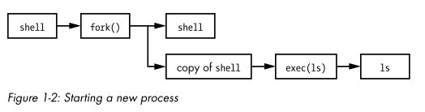

# Linux - System Architecture - Kernel
The kernel runs in ring 0.
i.e. It has full access to hardware
One of the kernel's tasks is to split memory into many subdivisions.
Each process gets its own share of memory, and the kernel must ensure that each process keeps to its share.
## Kernel Location
• When you install a kernel, files get added to the /boot directory
◇
vmlinuz - this is the actual linux kernel
◇
initrd - the temporary file system used before loading the kernel
◇
System.map - symbolic lookup table
◇
config - kernel configuration settings (you can set which modules can be loaded)
## Kernel Modules
• Kernel modules are pieces of code that can be loaded and unloaded into the kernel on demand
◇ e.g. a new keyboard driver
• They allow us to extend the functionality of the kernel
◇ without actually modifying the core kernel code
◇ (that would cause nightmares)
• You can (usually) add modules without having to reboot the system
lsmod - list the currently loaded modules
sudo modprobe bluetooth - load a module
◇ modprobe loads modules from
/lib/modules/<kernel version>/kernel/drivers ◇ modprobe will also load any dependencies the kernel module has
sudo modprobe -r bluetooth - remove a module
Modify
/etc/modprobe.d to load modules on boot
## What the kernel has to manage
The Kernel has 4 system areas to manage:
•
Processes ◇ The kernel is responsible for determining which processes are allowed to use the CPU
•
Memory ◇ The kernel keeps of track of all memory
▪ what is currently allocated to a process
▪ what's shared between processes
▪ what's free
▪ etc.
•
Devices ◇ The kernel acts as an interface between hardware (disk, network cards) and processes
◇ The kernel operates on hardware
•
System calls ◇ The kernel responds to system calls from user space processes to carry out operations
## Processes Management
• The kernel starts, pauses, resumes and terminates processes.
• On modern operating systems, processes appear to run “simultaneously”, but that actually isn't the case.
◇ The kernel is responsible for context switching
###
Context Switching
• Consider a system with a 1 core CPU
◇ Only 1 process can use the CPU at any given time.
• Each process uses the CPU for a small fraction of a second
◇ then pauses;
◇ then another process uses the CPU,
◇ then pauses
◇ etc.
• The act of one process giving up control of the CPU to another process is called a
context switch• The kernel is responsible for context switching
### Time Slice
• The length of time that a process uses the CPU is called a
time slice.
• Each given piece of time is enough time for the process to run some significant computation
◇ processes will often finish their current task during a single slice
• Because the slices are so small, humans can't perceive them
◇ and so the system appears to be running multiple processes at once
### The Context Switching Process
1. The CPU (the actual hardwrae) interrupts the current process, switches into kernel mode, and hands control back to the kernel
2. The kernel records the current state of the CPU and memory (needed to resume the process that was just interrupted)
3. The kernel kernel performs any tasks that might have come up during the time slice (e.g. collect data from input)
4. The kernel analyses the list of processes that are ready to run and chooses one
5. The kernel prepares memory and CPU for the new process
6. The kernel issues a time slice to the CPU for the new process
7. The kernel swtiches the CPU into user mode and hands control of the CPU to the process
###
Multi-CPU systems• Things become more complicated in multi-CPU systems
• In multi-CPU systems the kernel doesn't need to relinquish control of the CPU its currently running on in order to allow a process to run.
• To maximise usage of all available CPUs, the kernel relinquishes control anyway
◇ (and uses little tricks to grab a little more CPU time itself)
###
How Processes Startfork() - when a process calls fork(), the kernel creates creates a nearly identical copy of the process
exec() - when a process calls exec(<program>), the kernel starts <program>, replacing the current process
All processes on Linux (except
init) start as a result of fork(), and then call exec(<program>) to start the program
Example: You run ls in the terminal1. the shell calls fork() to create a copy of the shell
2. the new copy of the shell calls exec(ls) to run ls
## Memory Management
The kernel has to manage memory during a context switch, which is a complex job because:
• the kernel must have its own private area in memory to run that userland processes can't access
• each user process needs its own section of memory
• user processes can't access the memory of other processes
• but some user processes need to share memory
• some memory is read only, write only, execute only, r/w only, r/e only etc.
• the system might have to use more memory than physically available by digging into swap sp ace on disk
### Virtual Memory/VRAM
• Modern CPUs include a
memory management unit (MMU) that enables virtual memory/VRAM.
• The kernel initialises and maintains a memory address map/table to translate the virtual addresses to physical addresses and vice-versa
• When using virtual memory
◇ the kernel sets up a virtual memory block for a process to use
◇ (instead of accessing a phyiscal address in RAM)
• When the process accesses some of its memory
◇ the CPU's MMU interecepts
◇ and uses a memory address map to translate the virtual memory address into a physical memory address in RAM.
The kernel initialises and maintains this memory address map - also called a
page table.
## Device Management
• Devices are only accessible in kernel mode because improper access could crash the machine
• Device drivers have traditionally been part of the kernel because drivers for devices are rarely ever the same
◇ (even if they do the same thing)
◇ For example, 2 different network cards
▪ they both provide network functionality, but internally they work differently
◇ In order to present a uniform interface for user processes and software developers
▪ device drivers are part of the kernel
## System Call Management
• syscalls perform specific tasks that user space processes can't do alone
◇ opening/reading/writing files
◇ printing files
▪ all those operations require interfacing with hardware